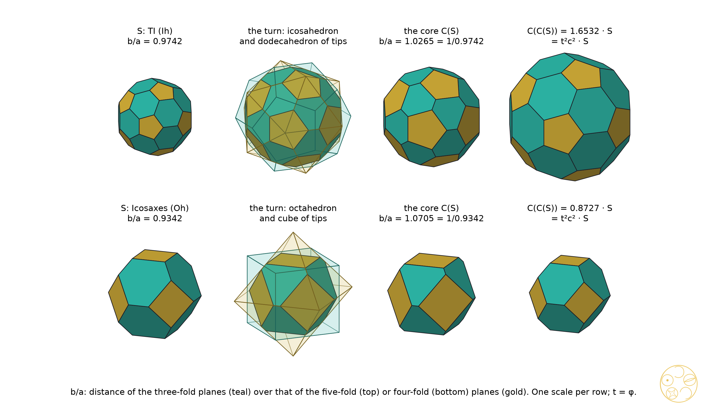
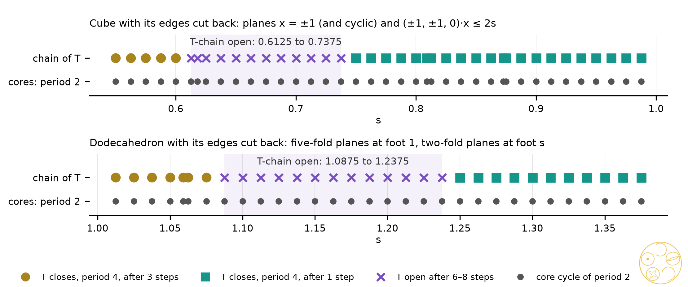

When the cores of DICTO's star chains alternate
Turn a solid's face pyramids outwards and each kind of face sends its tips to a different shell. Wrap each shell's tips and keep what all the wrappings share. For the truncated icosahedron this inner solid swaps the depths of the pentagons and hexagons, and the next turn swaps them back.
The book Star Cores follows DICTO's spiked solids. In #78 DICTO turned TI's 32 face pyramids outwards into the TI Star; the hull of the tips is the Star Halo, and the step is DICTO's growth rule T of Universal PiTet (#38), T(S) = {x : v·x ≤ v·v for every corner v}, read backwards. #78 also took the core of each turn, one solid per kind of face plane intersected, and showed in its Proposition 5 that TI and its core alternate. #79 (paper A) gave every new shape of the data set the star core treatment and found that the cores of 29 of the 48 convex shapes settle into a cycle of period two. #80 (paper C) found the exact gains of the chains of T. This paper, paper B, proves the period two of the cores, gives the exact scale, and says where the cycle stops.
The book plan stated a main statement for Part III: a solid whose faces lie in just two families of planes, on the five-fold and three-fold axes (or the four-fold and three-fold), has a star cycle in which the cores alternate with period two and the hulls with period four. Its core part is our main theorem. Its hull part is not proved here; Section 7 shows that the number of plane families alone does not decide it.
Let S be a convex solid with its centre O inside. Each face f lies in a plane nf·x = df, with nf a unit vector and df > 0 the distance from O. In a turn with spike factor t the face's pyramid from O is turned outwards with its tip at t·dfnf, t times the foot of the perpendicular from O (t = 2 mirrors the pyramid in its face, t = φ gives the golden spike).
Definition (#78). Group the faces of S into families, each family one kind of face plane. For each family whose tips span space (at least four tips, not in one plane), take the convex hull of its tips. The core Ct(S) is the intersection of these hulls. A family whose tips are fewer than four or lie in one plane is passed over. If no family is left, or the centre is not strictly inside every hull, S has no core.
Since every tip scales with t, Ct(S) = t·C1(S), and we work at t = 1 where convenient. In the proofs a family is the set of faces whose planes are square to one kind of symmetry axis at one distance. The studies group faces by their number of sides and their distance from O. On every solid that the theorem covers the two groupings agree, since the two kinds of face have different numbers of sides (Remark after the theorem).
For TI the two families are the 12 pentagons and the 20 hexagons. The pentagon tips are the corners of an icosahedron and the hexagon tips those of a dodecahedron, and the core is their common part. #78, Proposition 5, found that the core of the core's turn is TI again, larger by t²(5 + 2√5)/15, because each turn inverts the ratio of the pentagon and hexagon distances. The theorem below shows why this works, and for which solids.
A wrapping of tips that stand on the five-fold axes is an icosahedron, and its faces stand on the three-fold axes. So the tips of one kind of face become the planes of the other kind, a fixed fraction closer in. Two turns bring every plane back to its own axis.
Setting. Let P be a regular solid centred at O, U the set of unit vectors to its corners, and W the set of unit vectors to the corners of its dual, which are the unit normals of the faces of P. Let c be the largest value of u·w over u in U for any fixed w in W; it is the same for every w and also the largest value of u·w over w for any fixed u (checked exactly for all three pairs). So c = cos θ, with θ the angle from an axis of one kind to the nearest axis of the other kind, and c is the ratio of inradius to circumradius of P, and of its dual. For a, b > 0 put
K(a, b) = {x : u·x ≤ a for every u in U, and w·x ≤ b for every w in W}.
The three pairs are the icosahedron (U on the five-fold axes) with the dodecahedron (W on the three-fold axes); the octahedron (U on the four-fold axes) with the cube (W on the three-fold axes); and the tetrahedron with its point reflection (U and W = −U on the two kinds of three-fold axis of the tetrahedral group).
Lemma 1. For r > 0, the convex hull of the points r·u (u in U) is the solid {x : w·x ≤ rc for every w in W}. Likewise the hull of the points r·w (w in W) is {x : u·x ≤ rc for every u in U}.
Proof. The hull of the points r·u is r·P, which has circumradius r and its face normals in W. Each face of r·P contains a corner r·u, at distance r·(u·w) from O along w, and this is the largest such value over the corners, that is rc. The same holds for the dual with the roles of U and W exchanged, with the same c. ∎
Lemma 2 (the window). The planes u·x = a are faces of K(a, b) if and only if ac < b, and the planes w·x = b are faces if and only if bc < a. So both kinds of plane are faces exactly when c < b/a < 1/c.
Proof. If ac < b, the point a·u satisfies w·(a u) ≤ ac < b for every w and u′·(a u) < a for every other u′, so a neighbourhood of a·u in the plane u·x = a lies in K: the plane carries a face. If ac ≥ b, the solid {x : w·x ≤ b} is, by Lemma 1, the hull of the points (b/c)·u, so on it u·x ≤ b/c ≤ a, with equality at most at the single corner (b/c)·u: the plane carries no face. The same argument with U and W exchanged gives the second statement. ∎
Theorem (the core cycle). Let S = K(a, b) with c < b/a < 1/c, so that its faces lie in exactly two families, on the U axes at distance a and on the W axes at distance b. Then, for every spike factor t > 0:
(a) Ct(S) = K(tcb, tca): the core is the same kind of solid with the two distances swapped and multiplied by tc, and its distance ratio is inverted, from b/a to a/b, which lies in the same window;
(b) Ct(Ct(S)) = t²c²·S: two turns give S back, scaled by t²c², whatever the distances a and b;
(c) c² = (5 + 2√5)/15 = φ³/(3√5) ≈ 0.631476 for the icosahedron and dodecahedron (θ ≈ 37.3774°), c² = 1/3 for the octahedron and cube (θ ≈ 54.7356°), and c² = 1/9 for the tetrahedron (θ ≈ 70.5288°);
(d) for the icosahedral and octahedral pairs the cores have period exactly two unless a = b, when Ct(S) = tc·S; for the tetrahedral pair Ct(S) is tc·S turned a quarter turn about a two-fold axis, so the cores repeat one shape, alternating between two positions.
If instead only one kind of plane is a face (b/a outside the window), S is a regular solid, and the cores alternate between it and its dual with the same scale t²c² over two turns.
Proof. (a) The faces of S are the planes u·x = a and w·x = b, so the tips are the points ta·u and tb·w. By Lemma 1 the hull of the first set is {x : w·x ≤ tac} and the hull of the second is {x : u·x ≤ tbc}. Both contain O strictly, and their intersection is K(tcb, tca). Its ratio is (tca)/(tcb) = a/b, and c < b/a < 1/c is the same condition as c < a/b < 1/c, so both kinds of plane remain faces (Lemma 2). (b) Applying (a) twice gives K(t²c²a, t²c²b) = t²c²·K(a, b). (c) For the icosahedron with corners (0, ±1, ±φ) and cyclic, and the dodecahedron with corners (±1, ±1, ±1) and (0, ±φ, ±1/φ) and cyclic, the nearest pair is u = (0, 1, φ)/√(φ + 2) and w = (1, 1, 1)/√3, with u·w = (1 + φ)/√(3(φ + 2)) = φ²/√(3(φ + 2)). So c² = φ⁴/(3(φ + 2)), and since φ + 2 = √5·φ this is φ³/(3√5) = (5 + 2√5)/15. For the octahedron and cube, u = (1, 0, 0) and w = (1, 1, 1)/√3 give c² = 1/3. For the tetrahedron, u = (1, 1, 1)/√3 and w = (1, 1, −1)/√3 (a corner of the reflected tetrahedron) give c = 1/3. (d) The faces on U have 5 or 10 sides (icosahedral) or 4 or 8 (octahedral), and those on W have 3 or 6, so a similarity between two such solids must carry each family to the same family, and it fixes O, the common centre of symmetry. The ratio b/a is therefore an invariant of the shape, and Ct(S) is similar to S only if a/b = b/a, that is a = b. For the tetrahedral pair the quarter turn R about a coordinate axis carries U to W = −U and W to U, so R·K(a, b) = K(b, a) and Ct(S) = tc·R·S. For one family: if S = {u·x ≤ a}, its tips ta·u have the hull {w·x ≤ tac}, whose tips tac·tw have the hull {u·x ≤ t²c²a}. ∎
The two-turn scale is a property of the pair of regular solids alone: it does not depend on the distances a and b. #78's value t²(5 + 2√5)/15 for TI (1.653225 at t = φ, 2.525903 at t = 2) is the icosahedral case, and (5 + 2√5)/15 is the square of the inradius-to-circumradius ratio of the icosahedron and of the dodecahedron, as #78 noted. #78's check q(TI)·q(C) = 1, for q the squared ratio of the pentagon and hexagon distances, is part (a): (13/3 − 22√5/15)·(195 + 66√5)/361 = 1 exactly. TI's core ratio of hexagon to pentagon distance, 1/0.974154 = 1.026531, lies in the window (0.7947, 1.2584).
Remark (families). The proof groups faces by axis kind. In the icosahedral and octahedral cases the two kinds of face have different numbers of sides, so grouping by number of sides and distance, as the studies do, gives the same families. In the tetrahedral case both kinds of face can be triangles at the same distance: for a = b, K(a, a) is the regular octahedron, whose eight faces the studies would put in one family, giving a cube as the core. The theorem is stated with families by axis kind; no tetrahedral solid of the data set has a = b.

Corollary 2 (entering the cycle). Let S be a convex solid with the full icosahedral (or octahedral) symmetry, each family of faces one orbit of planes, every face plane square to a rotation axis of the group. Then Ct(S) is a solid K(a′, b′) of the icosahedral (octahedral) pair, or a regular solid of that pair, so the cores of S are in the cycle of the theorem from the first turn on.
Proof. The tips of a family on the five-fold axes span an icosahedron, whose faces lie on the three-fold axes; on the three-fold axes, a dodecahedron, with faces on the five-fold axes; on the two-fold axes, an icosidodecahedron, whose 12 pentagons lie on the five-fold axes and 20 triangles on the three-fold axes. In the octahedral group the tips on the four-, three- and two-fold axes span an octahedron, a cube and a cuboctahedron, whose faces lie on the three-fold, four-fold, and four- and three-fold axes. So every hull is cut out by planes u·x ≤ α and w·x ≤ β of the pair, and so is their intersection, the core. A family's hull contains O strictly because the orbit's directions are not all on one side of a plane. ∎
The same holds for the pyritohedral group, which contains the coordinate axes and the three-fold axes, and so the octahedron–cube pair: DICTO's OCD Stella and OTT reach the cycle this way.
| Pair of axes | Regular solids of the tips | Angle θ | c² = two-turn scale at t = 1 | t = φ | t = 2 | Squared radius over two turns (t = 1) |
|---|---|---|---|---|---|---|
| five-fold, three-fold | icosahedron, dodecahedron | 37.3774° | (5 + 2√5)/15 = φ³/(3√5) ≈ 0.631476 | 1.653225 | 2.525903 | 1/5 + 4√5/45 |
| four-fold, three-fold | octahedron, cube | 54.7356° | 1/3 | 0.872678 | 1.333333 | 1/9 |
| three-fold, other three-fold | tetrahedron, reflected tetrahedron | 70.5288° | 1/9 | 0.290893 | 0.444444 | 1/81 |
Table 1. The scale of two turns in length is t²c², exact. At t = φ the values are φ²c²: 5/6 + 11√5/30, (3 + √5)/6 and (3 + √5)/18. The last column, c⁴, is the form in which the studies record the gain (squared radius ratio at t = 1); it is matched exactly in Sections 5 and 6.
The scale is the inverse of the Platonic gain of #80: there DICTO's rule T carries a regular solid to its dual and back, larger by (R/r)² = 1/c² (9, 3 and 15 − 6√5), while the core moves every plane in by c per turn. One turn of T moves a plane out to the corner; one turn of the core moves it back in.
Of DICTO's 48 convex shapes, 29 settle into a pair of cores that swap back and forth. The theorem predicts the exact scale for all but one of them. The other 19 never form a core.
Study 2b followed the core turn exactly (in ℚ, ℚ(√5), ℚ(∛2) or the field of the shape) for the 48 convex shapes of DICTO Solids v6 cut from their centre into face pyramids, as in #79. A return was recorded when every corner of a later core is parallel to a corner of an earlier one with one exact squared ratio. Table 2 sorts the 29 shapes whose cores return.
| Cycle cores | Shapes (D-number) | Enter at turn 0 / 1 / 2 | Two-turn squared-radius gain, exact | Theorem |
|---|---|---|---|---|
| K(a, b) on the five- and three-fold axes: 12 pentagons + 20 hexagons, 20 triangles + 12 decagons, or 20 triangles + 12 pentagons | GTI (D40), TI Star core (D105); Truncated-Icosahedral Hecatodihedron (D22), OG (D28), Metaxyhexecontahedron (D30), Palintriacontahedron (D31), FPD (D41), PHE (D46), DPHP (D48), TPH (D49), TQH (D50), TQP (D51), TQHD (D52), Jabberwock (D88), Tweedledum (D89), Red Knight (D100), White Knight (D101), Star Halo (D104); KRE (D45), TPP (D47), Lion (D87) | 2 / 16 / 3 | 1/5 + 4√5/45 = c⁴ | yes |
| K(a, b) on the four- (two-) and three-fold axes: 6 squares + 8 hexagons | OCD Stella (D29), OTT (D38) | 0 / 2 / 0 | 1/9 = c⁴ | yes |
| regular octahedron ↔ cube (one family) | Lahdeli (D77) | 0 / 0 / 1 | 1/9 = c⁴ | yes, one family |
| K(a, b) on the two kinds of three-fold axis: 4 triangles + 4 hexagons | Samson (D71), Triskelion Tetrahedron (D82), Alice (D94), White Rabbit (D95) | 0 / 4 / 0 | 1/81 = c⁴ | yes |
| trigonal antiprism, one family of six side faces | Belted Triacontahedron (D37) | 0 / 0 / 1 | (207 − 85√5)/3362 | no |
Table 2. The 29 convex shapes whose cores return, all with period two: 2 at once, 22 after one turn, 5 after two. The four solids of study 2 outside the convex list behave the same way: Icosaxes and Unborn Axes (K(a, b), octahedral, at once, 1/9), Delilah (cube ↔ octahedron, at once, 1/9), and David (D2d, one family of four faces, at once, 1/100; outside the theorem). All gains from study2b.json, compared with c⁴ exactly (script paper_b_checks.py).
Why the cycle cores are of the theorem's kind. In the icosahedral group an orbit of 12 planes has a stabiliser of order 10, so its normals lie on the five-fold axes, and an orbit of 20 has normals on the three-fold axes; in the tetrahedral group an orbit of 4 planes lies on three-fold axes; in the pyritohedral and octahedral groups orbits of 6 and 8 lie on the coordinate and three-fold axes. So the face counts in Table 2 place every cycle core of the first four rows in K(a, b) of its pair, and the exact gains agree with c⁴ in all 28 cases. For the tetrahedral four the squared radius drops by exactly 1/9 at every turn from the first on, as part (d) predicts: one shape, alternating between two positions.
Lahdeli. Its cores are octahedra with D3d symmetry until, at the second turn, all eight faces lie at one distance. A D3d octahedron with corners (r cos 120°k, r sin 120°k, ±h) has its side faces at squared distance 9h²r²/(16h² + r²), which equals h², the distance of the two end faces, only for r = √2·h: the regular octahedron. From there Lahdeli's cores are the regular octahedron and cube (computed exactly with sympy; script paper_b_checks.py).
The Belted Triacontahedron, the one exception. From its second turn its cores are trigonal antiprisms whose two end triangles give only two tips; that family is passed over, and each core is the hull of the six side-face tips alone. The squared radius then falls by the same factor (17 − 5√5)/82 ≈ 0.070971 at every turn (exact, turns 2 to 4), so each core is the previous one turned and scaled: a cycle of period two as placed, with two-turn length scale (17 − 5√5)/82 and squared-radius gain (207 − 85√5)/3362. This is computed, not proved; the theorem does not apply, because the cores have one family that the definition can use, and its tips are not the corners of a regular solid.
Proposition 3 (no core). A solid has no core if each family of faces is one orbit of its symmetry group and (i) the group is Cnv (rotations about one axis and mirrors through it), or (ii) the group is C2h, or (iii) the solid is a right prism.
Proof. (i) Every element of Cnv keeps the height along the axis, so an orbit of tips lies in one plane square to the axis. (ii) The orbit of a point p under C2h is ±p, ±Rp, with R the half turn about the axis; these four points lie in the plane through the axis and p. (iii) The side faces of a right prism have normals square to the axis, so their tips lie in the mid-plane, and the two end faces give two tips. In each case no family has tips spanning space. ∎
| No core at | Shapes (D-number, symmetry) | Reason |
|---|---|---|
| turn 1 | skewed rhombic dodecahedron (D1), skewed elongated dodecahedra ED F16 (D2) and F18 (D3), all C2h | Proposition 3(ii): four families of 2 or 4 tips, each in one plane |
| turn 1 | Dodeca-13 Wedge (D6, C2v) | three families of 2 tips each |
| turn 1 | Dodeca-13 Needle (D7), Sonsam (D76), Ian Dury (D78), Blockhead (D79), Chucky (D80), Ganesha (D84), all C3v | Proposition 3(i): families of 1, 3 or 6 tips, each in one plane |
| turn 1 | Fang (D81, C3v) | its four triangles lie at one distance and form one family; their tips span a tetrahedron, but one of its face planes does not have the centre strictly inside |
| turn 2 | Mad Hatter (D91), March Hare (D92), Jubjub (D93), Haigha (D96), Hatta (D97), all D3h; Walrus (D99, D5h); Red King (D98, D10h) | the first core is a prism (hexagonal, triangular or decagonal); Proposition 3(iii) |
| turn 3 | Tweedledee (D90, D5h) | the second core is a pentagonal prism; Proposition 3(iii) |
Table 3. The 19 convex shapes without a core (11 at the first turn, 7 at the second, 1 at the third), with the family sizes recorded in study2b.log. The first cores of the turn-2 shapes have 6 squares and 2 hexagons, 3 squares and 2 triangles, or 10 squares and 2 decagons; Tweedledee's second core has 5 squares and 2 pentagons.
So the core cycle is a property of the shapes with a full polyhedral symmetry: every shape in Table 2 except the Belted Triacontahedron and Lahdeli has icosahedral, octahedral, pyritohedral or tetrahedral symmetry, and every shape in Table 3 has a symmetry group that fixes one axis (C2h, C2v, C3v, D3h, D5h, D10h). Among them are seven Queens' slices and several of DICTO's eccentric pieces, the stars that keep growing in #79.
Study 3 built exactly every convex solid whose face planes lie on two kinds of symmetry axis, icosahedral (5+3, 5+2, 3+2) or octahedral (4+3, 4+2, 3+2), with the first family at foot distance 1 along its axis vectors and the second at s, s swept over a grid of 16 values and then in steps of 1/80 for the 4+2 and 5+2 cases; three-family solids (5+3+2, 4+3+2) were added for contrast. Only solids on which every plane is a face were kept: 94 runs on 88 distinct solids (six were run in both passes; two runs stopped on errors of the half-space routine and are not counted).
| Axes | Solids | Cores period two | Cores enter at turn | Gain (t = 1) |
|---|---|---|---|---|
| Ih 5+3 | 6 | 6 | 0 | 1/5 + 4√5/45 |
| Ih 5+2 | 31 | 31 | 1 | 1/5 + 4√5/45 |
| Ih 3+2 | 2 | 2 | 1 | 1/5 + 4√5/45 |
| Oh 4+3 | 6 | 6 | 0 | 1/9 |
| Oh 4+2 | 39 | 39 | 1 | 1/9 |
| Oh 3+2 | 3 | 3 | 1 | 1/9 |
| Oh 4+3+2 | 1 | 1 | 1 | 1/9 |
Table 4. Study 3, distinct solids. Every core cycle has period two and the gain c⁴ of its group, exactly.
This is the theorem and Corollary 2 at work: the 5+3 and 4+3 solids are K(a, b) and cycle at once; every solid with a family on the two-fold axes has as its first core a K(a′, b′) and cycles from there.
The cores ignore depth: whatever the cut, two turns bring them back. DICTO's rule T, which builds the hulls, does not. Cut the edges of a cube a little and the chain closes; cut them a little more and it spreads; cut deeper still and it closes again.

The same 88 solids were run under T (#38) for eight steps. The 5+3 and 4+3 solids, the two-family solids of the original main statement, all close with period four at once (12 of 12), and the 3+2 solids close too. But with one family on the two-fold axes the outcome depends on the depth s (Figure 2; #80, Section 6):
The exact edges of the open windows were not located. "Open" means no step similar to an earlier one within six to eight steps, with the number of corners rising to between 110 and 860.
Correction of the main statement. The plan's main statement said that two families of planes give cores of period two and hulls of period four. The core part is the theorem of Section 3, proved and confirmed on all 88 swept solids. The hull part does not follow from the number of families: for two families with one on the two-fold axes it fails at middle depths. For two families on the five- and three-fold (or four- and three-fold) axes every tested chain closed with period four, but this rests on 12 solids and is not proved here. The cores and the hulls of a turn are different objects: the core intersects one regular solid per family, which forgets everything but the two distances, while T builds a new face at every corner, and the corners of an edge-cut solid can sit off the symmetry axes.
The core of a turn takes the tips of each family of faces, and the tips on one kind of axis wrap into a regular solid whose faces lie on the other kind. So a solid cut by planes on the axes of a regular solid and of its dual has a core cut by the same two kinds of plane, with the two distances swapped and pulled in by the cosine of the angle between the axes. Two turns give the solid back, scaled by t²c²: t²(5 + 2√5)/15 in the icosahedral case, t²/3 in the octahedral and t²/9 in the tetrahedral, whatever the depths. This proves DICTO's proposal for the cores, accounts exactly for 28 of the 29 returning cores among his convex shapes and for every two-family solid swept, and shows why the 19 others have no core. The hulls are a different matter: depth, not the number of families, decides whether DICTO's growth rule closes.
In the app. Polyhedraverse, Star step (polyhedraverse.dictospheres.com/?open=starstep:TRUNCATED_ICOSAHEDRON), spikes the truncated icosahedron and wraps it, one tap per step.
Sources checked (31 October 2026). Reference library (ask-library on dicto-big-brother, top six hits each): "intersection of a dodecahedron and an icosahedron at different sizes truncation" (Richter-Gebert 2026, Wikipedia "Rhombic dodecahedron", Leppmeier 2019, Kabai 2010, Hafner 2007, Cesaroni–Novaga 2026; pages Al-Siyabi–Koca–Koca 2020 p. 6, Kepler 1619 p. 271): nothing on the intersection at varying sizes; "core of the compound of a polyhedron and its dual" (Cunningham–Mixer 2016, Koca et al. 2010, Hynd 2023, Richter-Gebert 2026, Wikipedia "Goldberg polyhedron", Montejano et al. 2019; page Torquato–Jiao 2009 p. 5): background only; "iterating the hull of face pyramid apexes" (Murphy–Weed 2024, Chen et al. 2018, Ballani 2026, Gosain–Grimmer 2025, Bernhard 2026, Hynd 2023; pages Pacioli 1509, Cutler–Schulte 2011 p. 21): nothing relevant; "Kleetope iterated kis operator sequence" (Antiprism conway docs, Barnsley–de Wit 2025, Hales 2003; page Wikipedia "Goldberg polyhedron"): nothing relevant; "angle between fivefold and threefold axes icosahedron" (Richter-Gebert 2026, Roth–Lück 1997, Coxeter et al. 1938, Messer 1995; pages Conway–Radin–Sadun 1999 pp. 15–16, not used): nothing on the core. The earlier queries of study 6 ("compound of dual polyhedra intersection core", "stellation core kernel"; Messer 1995 p. 2 read) are in prior-art-study6.md. Web, read: Wikipedia, "Compound of dodecahedron and icosahedron" (intersection the icosidodecahedron, hull the rhombic triacontahedron; no other sizes); Wikipedia, "Truncation (geometry)" (the truncation sequence, not described as an intersection with the dual); Daniilidis–Petitjean 2017 (ar5iv); and from study 6, Wikipedia "Polytope compound", G. W. Hart "Conway Notation for Polyhedra". Search results only: "intersection of icosahedron and dodecahedron varying relative size …"; "iterated polar reciprocal intersection of convex hulls polyhedron period two core sequence"; "truncated icosahedron as intersection of icosahedron and dodecahedron … Wenninger"; "repeated Kleetope pyramids on faces apex points convex hull iteration" (Wikipedia "Kleetope": no iteration result). Abstract only: H. S. M. Coxeter, "Reciprocating the regular polytopes", J. London Math. Soc. 55 (1997) 549–557. No source found states the core turn or its cycle.
Data and code. Study 2026-10-30-star-cores-exact (data at commit 72527ef8): scripts/study2b.py (the core turn for the 48 convex shapes and four study-2 solids, exact; data/study2b.json, study2b.log), study3.py (two plane families swept; data/study3.json, study3-fine.json); new for this paper scripts/paper_b_checks.py (the axis cosines and c² in closed form, the hulls of Lemma 1, the window and the core turn on sample ratios at t = 1, φ, 2, every study gain against c⁴, Lahdeli's regular octahedron, the Belted Triacontahedron's factor, #78's q(TI)q(C) = 1; data/paper-b-checks.log, all checks pass) and scripts/fig_paper_b.py (both figures). Exact arithmetic with the data set's exactlib (DICTO Solids: Exact Geometry v6, 10.5281/zenodo.23790799) and sympy. Run on dicto-big-brother.
Sources. DICTO, Universal PiTet (#38), DICTO DOI 10.5281/zenodo.23463305. DICTO, The Truncated Icosahedron Star (#78, v2), DICTO DOI 10.5281/zenodo.23782577. DICTO, Star Cores of DICTO's Solids (#79), DICTO DOI 10.5281/zenodo.23822905. DICTO, The Gains of DICTO's Growth Rule (#80), DICTO DOI 10.5281/zenodo.23822907. H. S. M. Coxeter, "Reciprocating the regular polytopes", J. London Math. Soc. 55 (1997) 549–557. A. Daniilidis, C. Petitjean, arXiv:1702.00168 (2017). Wikipedia, "Compound of dodecahedron and icosahedron", "Truncation (geometry)", "Polytope compound", "Kleetope" (accessed 31 October 2026).